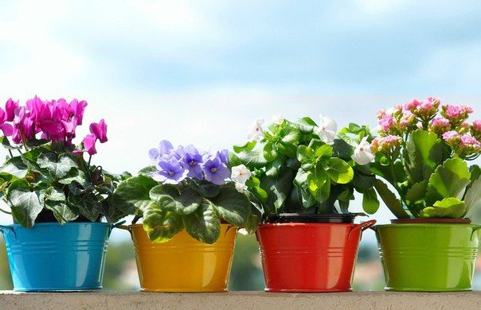

Топ 5
- Хлорофитум - он себя прекрасно чувствует, как в темном, так и светлом месте. Следует учесть тот факт, что при затемненном освещении теряется яркость листьев. Он очищает комнату от углекислого газа за короткое время
- Драцена - считается одной из самых неприхотливых растений. Виды комнатных цветов позволяет выбрать – драцену окаймленную или драко. Они выдерживают затененность и пренебрежительное отношение как полив комнатных цветов. Эти растения служат прекрасным декоративным украшением.
- Толстянка, или денежное дерево - Она не любит переизбыток влаги и темных углов, за то многие верят, что приносит удачу, процветание и богатство. Хотя это комнатное растение не цветет, но вырастает до внушительных размеров.
- Замиокулькас - какие комнатные цветы равнодушны к составу грунта? Правильно, замиокулькас, оно превосходно переносит перерыв в поливе и недостаточно хорошее освещение.
- Монстера - Владельцам габаритных квартир или домов подойдет данный цветок, ведь он требует пространства. Листья комнатных цветов требуют периодического опрыскивания, монстера не является исключением. Хотя она и не особо капризна, но требует светлого места.